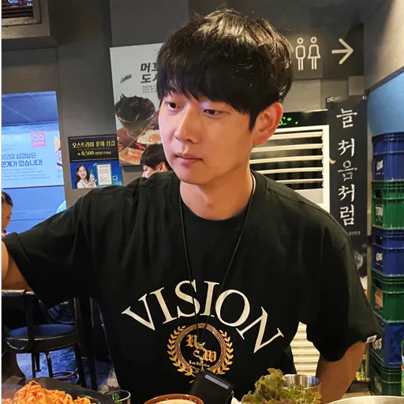

김진민 Jinmin Kim
의료영상과 3D 형상에서 수술계획에 필요한 좌표 관계를 연구합니다. 치아 교합 기반의 하악골 정복 최적화와 디지털 교합 워크플로우를 중심으로, 정합 알고리즘을 내비게이션 소프트웨어와 실제 장치에 연결합니다.
㈜디지트랙 연구원 · 소프트웨어 개발
DGIST 로봇및기계전자공학 석사

구현 역량
- 3D 기하 및 정합
- PCA, ICP, CLPSO, Open3D, OpenCV, SciPy
- 센서 융합 및 위치추정
- ToF-RGB registration, SICK TiM LiDAR, NAV350, Robot localization, Zenoh
- 의료 내비게이션 및 시각화
- 3D Slicer, VTK, Qt, OpenIGTLink, Optical tracking
- XR 애플리케이션 엔지니어링
- Unity, MRTK, Meta Quest, Photon PUN2, Photon Voice
- AI 활용 제품 엔지니어링
- Requirements & architecture, Acceptance criteria, Automated tests, Release operations, Human review
대표 연구
구강악안면 디지털 교합 워크플로우
8개 3D 모델 준비, 치아·악안면 특징점, 해부학적 좌표계, 자동 교합·6-DOF 조정·접촉 분석, RMSE·Gap·FRE 평가와 내보내기를 하나의 Custom App으로 연결했습니다.
SMCNavi · HoloLens 수술내비게이션
DIGITRACK이 삼성서울병원과 연구 협력으로 개발한 맞춤형 3D Slicer 수술내비게이션 플랫폼과 별도 HoloLens 공간 인터페이스 확장입니다.
주요 논문·학회 발표
- 2026 Development and Clinical Evaluation of an Extended Reality-Based Consultation Platform "OMFS VR Consultation App" for Enhanced Patient Understanding in Orthognathic Surgery
2026 의료메타버스학회 춘계 학술대회 · 포스터 발표 · 공동저자
- 2024 A Proof of Concept: Optimized Jawbone-Reduction Model for Mandibular Fracture Surgery
Journal of Imaging Informatics in Medicine (SCIE, Q1) · 학술지 논문 · 공동 제1저자 (Joint first author)
- 2022 Dental Occlusion Model Using Arch Line for Mandibular Fracture Surgery
ACCAS 2022 · 국제학회 논문 · 제1저자
특허 출원 7건 중 등록 3건 · 수상 9건 · 전체 목록과 상태
소식
multi-cli-work v1.29.0을 공개했습니다. 프로젝트 태그와 그룹 설정을 추가했습니다.
방사선치료용 3차원 표면유도 호흡추적과 4D CT 정합 연구를 시작했습니다. 첫해 센서·알고리즘 검증을 담당합니다.
OMFS VR 상담 플랫폼 연구가 2026 의료메타버스학회 춘계 학술대회 포스터로 발표되었습니다. 공동저자로 참여했습니다.
삼성서울병원 연구진과 디지털 교합 애플리케이션의 구조와 워크플로우 재설계를 시작했습니다. 특징점·교합·평가를 한 앱으로 연결하며 연구진 검증을 진행하고 있습니다.
연락
공동연구와 연구 대화를 환영합니다. uiop3847@naver.com · 연락처 안내